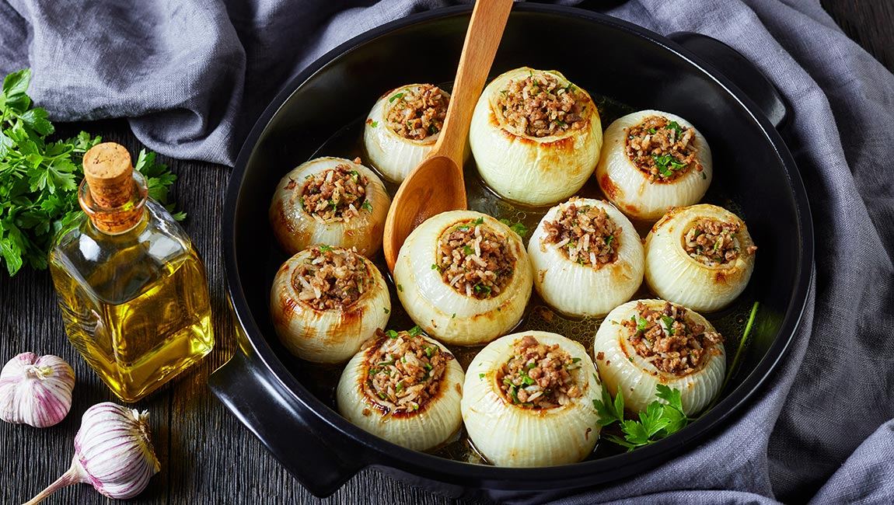
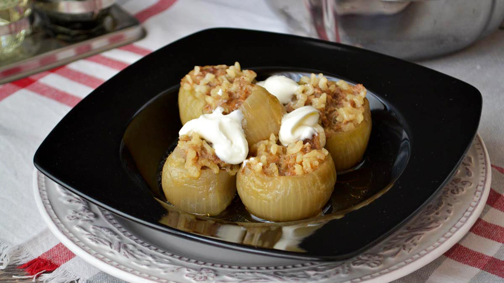
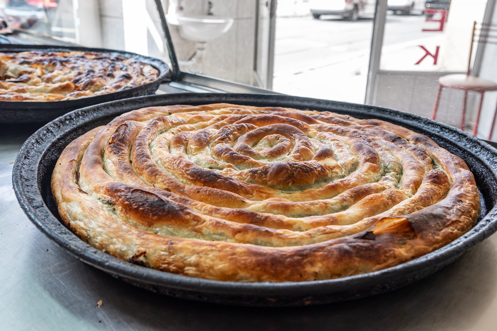
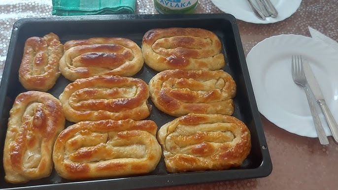
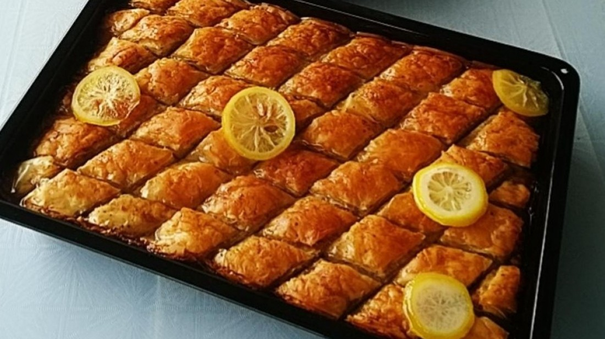
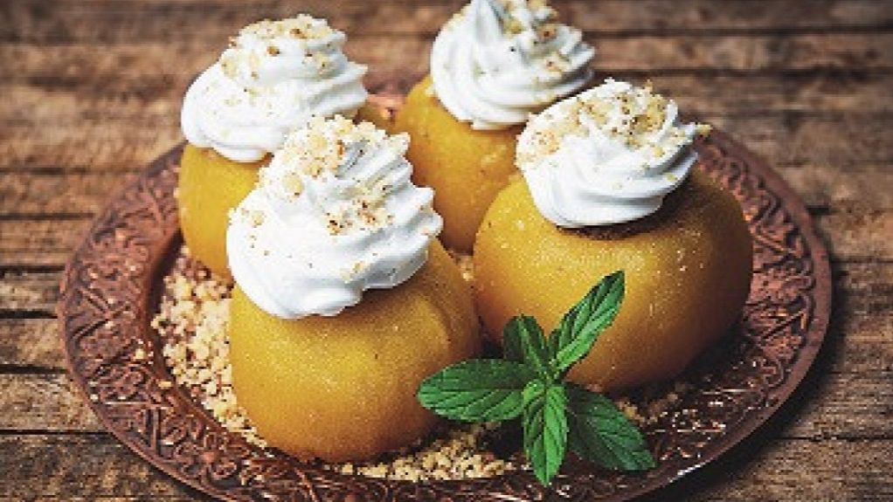
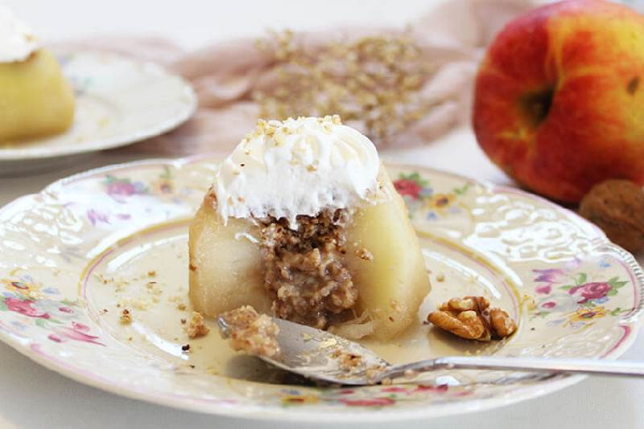
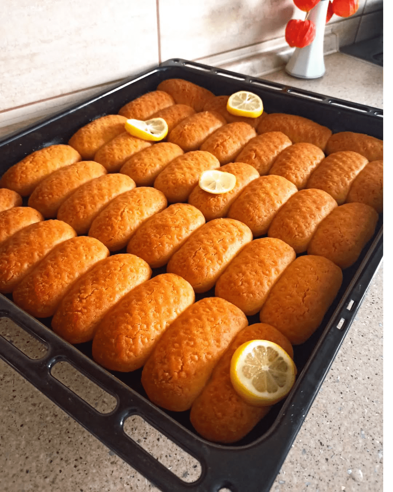
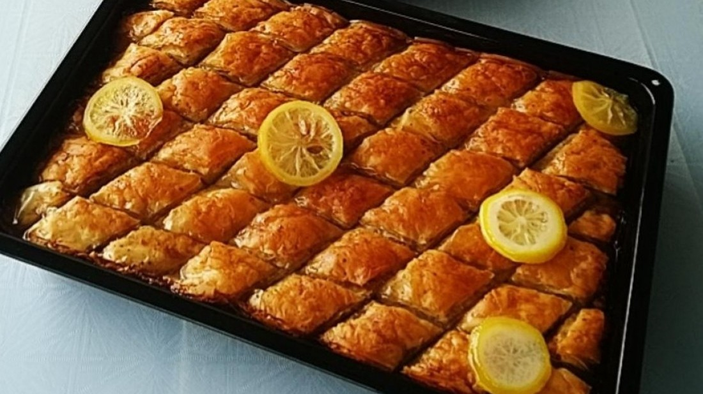
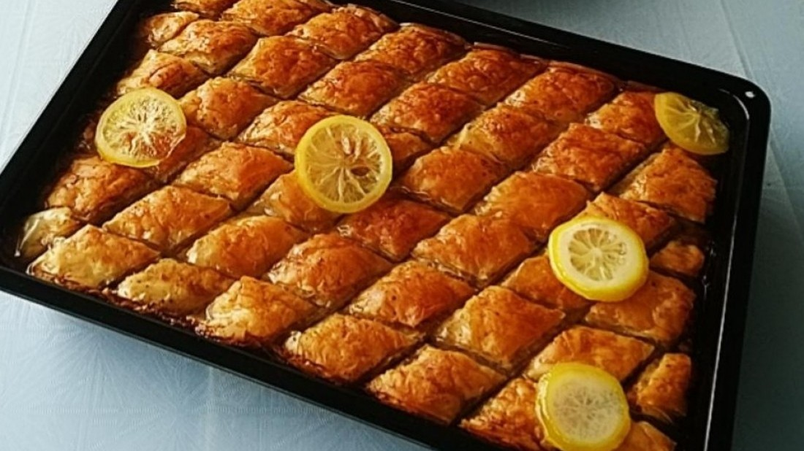

Ćevapi aren’t just grilled meat — they’re a beloved Bosnia tradition. Juicy, seasoned minced meat, shaped into small sausages and
grilled over hot coals, served with fresh flatbread, chopped onions, and a touch of ajvar. Simple yet bursting with flavor, they bring
friends and family together over casual meals and lively gatherings. Every bite tells a story of local craftsmanship, centuries of
culinary heritage, and the warm, communal spirit of the Balkans — a taste that stays with you long after the last morsel.
Sogan dolma


Sogan Dolma isn’t just stuffed onions — it’s a savory taste of Bosnian tradition. Sweet onions are filled with a fragrant mixture of minced
meat, rice, and herbs, then slowly cooked to perfection, filling the kitchen with a comforting aroma. Rich, hearty, and full of flavor,
it’s a dish meant to be shared with family and friends. Every bite carries the warmth of home, generations of care, and the timeless
spirit of Bosnia — a true taste of Bosnian culinary heritage.
Pita


Pita isn’t just a pastry — it’s a cherished Balkan classic. Thin, golden layers of dough envelop fillings like cheese, spinach, or
meat, baked to a delicate crisp. Served warm from the oven, it’s a dish that brings families together and fills homes with comforting
aromas. Simple yet soulful, every bite reflects generations of care, local ingredients, and the timeless joy of sharing food — a true
taste of the Bosnia.
Baklava

Baklava isn’t just a dessert — it’s a sweet jewel of Bosnian tradition. Layers of thin, crisp pastry cradle a rich filling of walnuts
or pistachios, all soaked in fragrant syrup or honey. Sweet, sticky, and utterly indulgent, it’s a treat often shared with family and
friends, celebrating special occasions and simple joys alike. Every bite carries the warmth of home, generations of craftsmanship, and
the timeless sweetness of Bosnia — a dessert that lingers in memory long after the last bite.
Tufahija


Tufahija isn’t just a dessert — it’s a sweet symbol of Bosnian tradition. Whole apples are gently poached and filled with spiced
walnut cream, then topped with a cloud of whipped cream, creating a dessert both elegant and comforting. Traditionally enjoyed during
special occasions or family gatherings, every bite carries the warmth of home, generations of care, and the timeless charm of Bosnian
cuisine — a treat that delights both the eyes and the palate.
Hurmašice

Hurmašice aren’t just sweets — they’re a beloved Bosnian treat. Soft, buttery cookies soaked in fragrant syrup, often sprinkled with
walnuts, creating a delicate balance of sweetness and texture. Traditionally enjoyed during festive occasions or shared with family
and friends, every bite carries warmth, care, and generations of culinary tradition. Simple, indulgent, and utterly comforting,
Hurmašice capture the timeless sweetness of Bosnia and the joy of sharing homemade delights.
 
